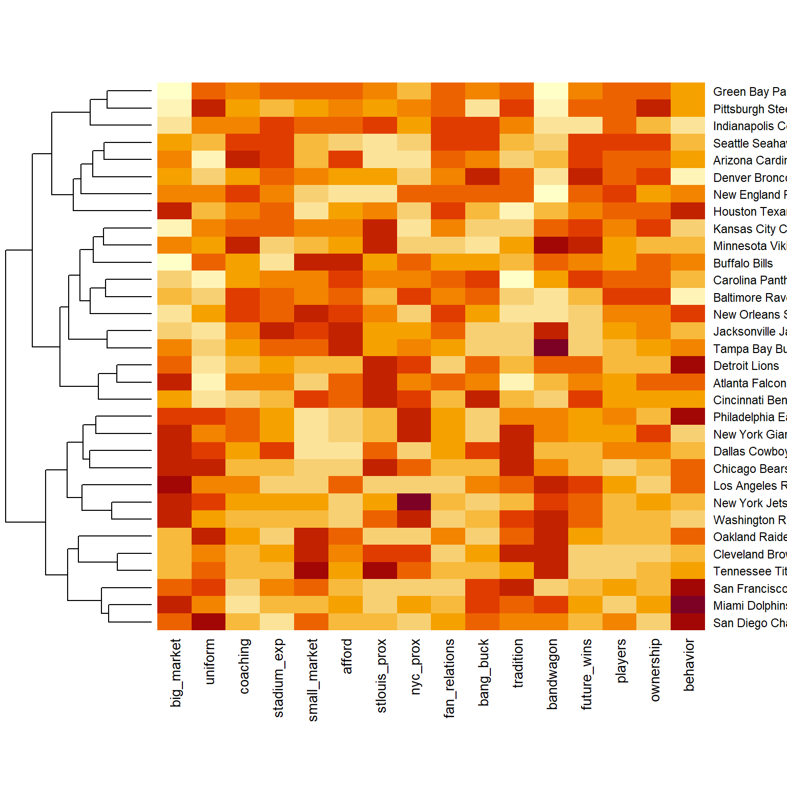
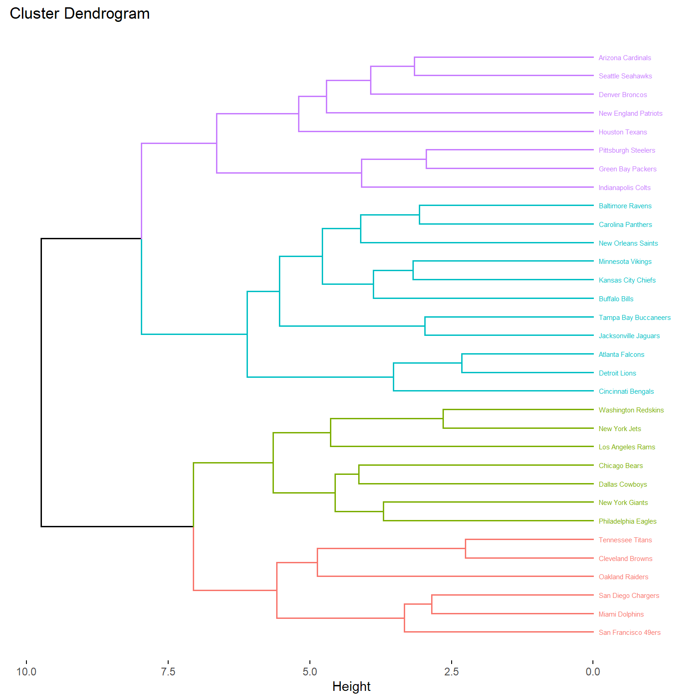
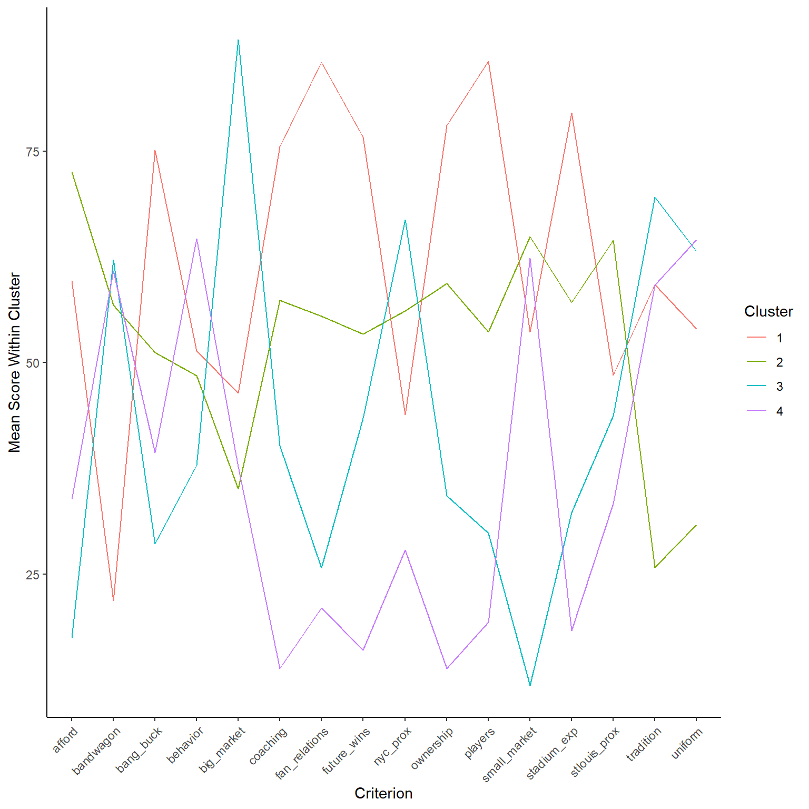
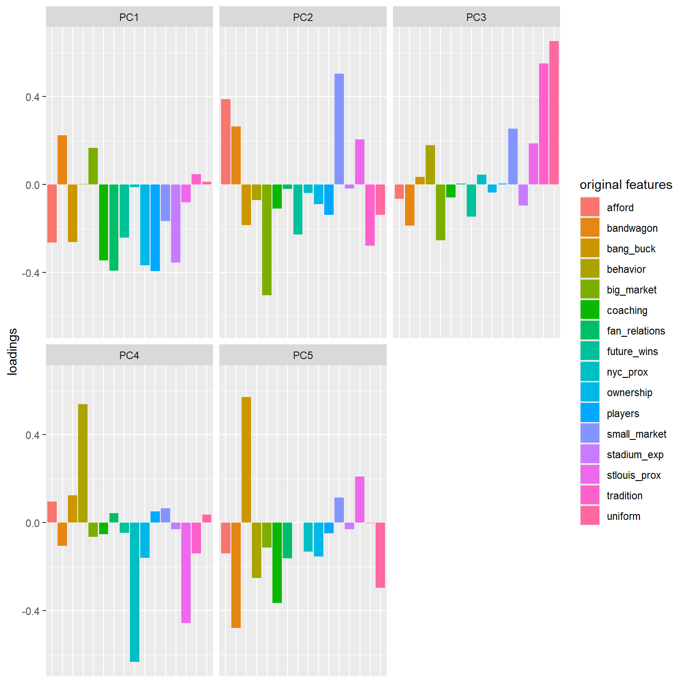
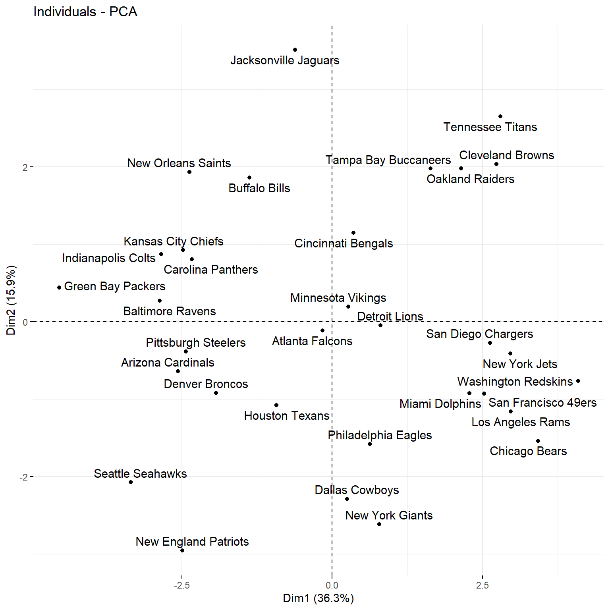

library(tidyverse)
library(fivethirtyeight)
library(cluster) # to build the hierarchical clustering algorithm
library(factoextra)
library(VIM)
library(tidymodels)
data(nfl_fav_team)
# Access a codebook and context from the console
?nfl_fav_team
nfl <- nfl_fav_team%>%
column_to_rownames("team")Data import and cleaning
Clustering analysis
Write-up
We chose to use hierarchical clustering to help identify clusters within our data on nfl teams. We chose a k of 4, because that looked to be the most natural split when looking at the dendrogram. Cluster 4 is the most distinct cluster based on its features. The characteristics of this cluster are small market teams with poor coaches and poor stadium experiences. This group is furthest away from both St Louis and NYC. They also have by far the worst score in future wins, players, and ownership. Essentially, this group of teams, comprised of the Raiders, Browns, Titans, Chargers, Dolphins, and 49ers, are all bad teams in bad spots as a franchise. We wouldn’t want to be a fan of these teams! Cluster 3 represents the big market teams, which are close in proximity to NYC, but have poor fan relations, and are expensive on game day. These teams also have a high bandwagon factor, and have strong traditions. This cluster is comprised of the Redskins, Jets, Rams, Bears, Cowboys, Giants, and Eagles. Cluster 2 is comprised of small market teams with ugly uniforms, and affordable game day experience. Close in proximity to St Louis, this group is characterized by its fairly average score across many of the categories. Cluster 1 is comprised of teams with strong coaching staffs, and an excellent stadium experience. Similarly, the relationship with fans is a strong one, and the fans are rewarded with a large number of wins. This group also has strong ownership. That, combined with the coaching and the very strong players score, creates a situation where the future wins of this group is very high. Cluster 1 looks to be the group that we would most like to be a fan of!
Code and plots
#Heatmap
heatmap(scale(data.matrix(nfl)), Colv = NA)
#Running hierarchical clustering algorithm
hier_model <- hclust(dist(scale(nfl)), method = "complete")
#Assigning clusters
cluster_data <- nfl %>%
mutate(hier_cluster_k = as.factor(cutree(hier_model, k = 4)))
#Building dendrogram with clusters highlighted
fviz_dend(hier_model, k = 4, horiz = TRUE, cex = .4)
#Obtaining means of variables within each cluster
mean_hier <- cluster_data%>%
group_by(hier_cluster_k)%>%
summarize_all(mean)
#Plot of means of each variable within each cluster, to aid in identifying similar characteristics of each cluster.
mean_hier%>%
pivot_longer(names_to = "criterion", values_to = "score", cols = !hier_cluster_k)%>%
ggplot(aes(x = criterion, y = score, group = hier_cluster_k, color = hier_cluster_k))+
geom_line()+
theme_classic()+
theme(axis.text.x=element_text(angle=45,hjust=1))+
labs(color = "Cluster", x = "Criterion", y = "Mean Score Within Cluster")
Dimension reduction analysis
Write-up
Our first principal component includes a good amount of a lot of our features, but more specifically their inverses. It appears that it is made up of features that have to do with money, and those that have to do with a teams stadium, fans, coaching, and success on the field, which could be argued to be some of the most important factors to consider. Our second principal component’s loadings are more so dominated by features that are primarily money related, such as market size, and affordability. Obviously, our two market variables that are inverse of each other are both major parts of this principal component, but running opposite of each other. The amount of Principal components we should keep is 4 principal components, as based on our loading plot, and the context of our research goal of finding the perfect team to become a fan of, we cannot ignore variables that are ignored by PC1 and PC2 that are captured later in PC’s 3 and 4, such as team tradition, uniforms, ownership and behavior, as these are all variables that carry a lot of weight when considering which team to select. The amount of information retained by keeping this amount of principal components is 73% of the variability of our data.
Code and plots
#No NAs
nfl <- data.frame(model.matrix(~ . - 1, nfl))
pca_results <- prcomp(nfl, scale = TRUE, center = TRUE)
# Plot loadings for first "5" PCs
library(reshape2)
pca_results$rotation %>% as.data.frame() %>%
select(PC1:PC13) %>%
rownames_to_column(var = 'Variable') %>%
pivot_longer(PC1:PC5 ,names_to = 'PC', values_to = 'Value') %>%
ggplot(aes(x = Variable, y = Value, fill = Variable)) +
geom_bar(stat = "identity") +
facet_wrap(~ PC) +
labs(y = "loadings", x = "original features", fill = "original features") +
theme(axis.title.x=element_blank(),
axis.text.x=element_blank(),
axis.ticks.x=element_blank())
# Graphical summary: Score plot
# Plot PC1 scores (x-axis) vs PC2 scores (y-axis) of all data points
fviz_pca_ind(pca_results, repel = TRUE)